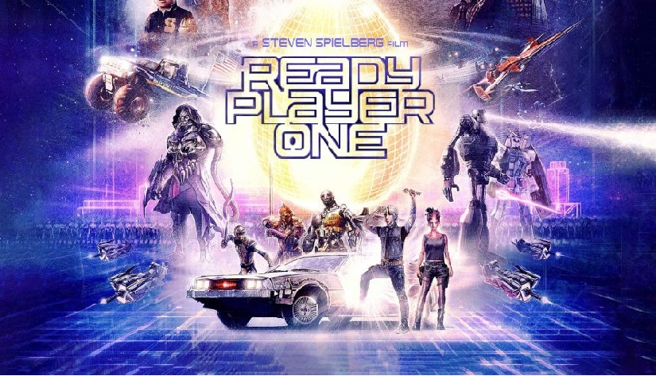

Tweet

WARNING: This articles contains SPOILERS for the Film AND the book. There are spoilers in this article
that are in the book that are not in the movie. If you're planning on reading the book don't read this article!
After much delay I finally got around to seeing the movie version of Ready Player One in the theaters.
This was one of my most anticipated movies in a long time! It was seriously on the same level for me
as seeing the new Star Wars movies, and that’s saying a lot. A movie version of one of my favorite books
and it was directly by Steven freaking Spielberg! How could it be anything else but greatness? So after all
the hype and excitement of the movie coming out and finally having the chance to see it, what did I think of it?
Well… it’s actually pretty complicated. Let’s jump right in.
Starting off, I read the novel the film was based on last February, about a month before the movie came out.
I saw the trailer for the movie and thought it looked really interesting. I decided I had enough time to pick
up and read the book the movie was based on before the movie came out. I absolutely adored the book, it was
some of the most fun I’ve ever had reading. I was hooked the entire time through; the characters, story, and
the world that is the Oasis, I loved all of it. The book was about 600 pages, and the movie was two and a half hours.
Obviously it’s not easy to cram 600 pages worth of material in a two and a half hour movie. Some things are going to
be left out and there may changes in the story, that’s just the way it works when adapting books into film.
Being a pretty big movie guy I understood that going in seeing the flick and even expected it, but even
considering that I was completely taken aback on just how different the movie was from the book. The amount of
differences between the book and the movie was seriously incredible. I’d say they kept about 20% worth of
material from the book, and the rest was either all new or done differently. It’s almost like rather than making
a movie version of the book, what we got was a reimagining of the story that was loosely based on the book, at
least that’s how it felt to me. I didn’t realize that fact before going in, and I wish I had. For those who
read and cherished the book the differences can be a little disheartening if you’re not expecting them when
going in to see the movie, and even if you are expecting them, it can still be tough to see the story your fell
in love with changed and messed with.
Because of this bias I have for the book, I can’t really fairly review the movie as a property of its own.
I can write how I felt while watching it, but since I’ve read the book I won’t be able to really see the movie
as its own entity. I’m interested in how I would have felt about the movie if I had seen it completely fresh
without any previous knowledge of the story going in. I enjoyed watching the movie, but I did have some pretty
serious problems with it.
To start on a good note, The film was absolutely beautiful from start to end. The movie was like a hybrid between
live action and animation. With the real world scenes taking place in live action, and scenes in the Oasis taking
place as Animation. I think this was the best way they could have done this; while I would have slightly preferred
the Oasis having some live action and I would have especially liked it if the avatars were played by their live action
actors, I understand it’s probably easier for the audience to have the clearer distinction between the real world and
the Oasis by having the scenes in the Oasis be entirely animated. The CGI looked great throughout the whole movie.
I’d call it enhanced looking video game graphics, not quite video game style graphics but not the traditional type
of animation you’d see from something like a Pixar movie.
On to the characters, I feel like they did a mostly good job with everyone. Our main character Wade Watts (aka Parzival)
felt pretty faithful to the character from the book. Although perhaps just a little bit underplayed? I can’t decide.
He did everything he was supposed to do in the role and got the job done. I think they could have maybe dived a little
deeper in his nerd knowledge of 80’s culture side. In the book he knew everything there was to know about James Halliday
and the culture he grew up around in, he was completely obsessed and consumed by it. While in the movie he had knowledge
of these things but they didn’t show it to the extent they did in the book. In the book it felt like Wade earned his spot
because of how much he knew and he used his knowledge to find the keys. In the movie it seemed a little bit more like dumb
luck. It also didn’t help they cut out an entire store arc from the book involving Wade in the real world which further developed his character.
Aech’s was represented pretty well in the movie. In the Oasis Aech acted pretty similarly to how the character did in the book.
The Real world equivalent of Aech was also really well acted and very close to how I pictured her when reading the book.
Aech’s character in the movie was definitely one of my favorites. However I feel like the surprise of Aech’s true
identity was much less effective in the film then it was in the book.
The character I was most disappointed on how they were depicted was Art3mis. I loved Art3mis in the book.
She was a real strong female character, but in the movie there just wasn’t a whole lot of substance to her.
Like she was just there so Wade had someone to end up with at the end of the movie, and that’s not how she
was in the books at all. I know it’s not really fair to keep comparing the characters from the movies to
the characters from the books, but it’s not an easy thing to do after reading the book and becoming
connected to these characters. I know it’s a movie and they only have so much time to work with, but it’s still disappointing.
Daito’s and Shoto’s characters were also good in the movie. They’re both really likeable and got a pretty good amount of screen time.
Although the movie did leave out one important part of the story that included Daito. In the book Daito’s apartment is broken into by
the IOI and is murdered by being thrown off his apartment building. I suppose they wanted to make the movie a little less dark but
I feel like this scene would have helped to show how dire it was to stop the IOI from winning the contest because of how drastically
evil they were and how they were willing to do whatever it took to stop anyone else from winning the contest.
It also furthered the importance of keeping one’s identity a secret.
James Halliday’s character was my favorite in the movie. Mark Rylance did such a damn good job with his performance.
He sold the role as a weird and quirky game designer perfectly, his character was incredible likeable.
A near perfect recreation of the characters representation from the book and maybe even improved on, that’s something
that’s rarely ever done so well in a movie. Not only was James Halliday my favorite character in the movie, but I’m pretty
sure his character was my favorite part of the whole movie itself. He seriously stole every scene he appeared in.
I liked Ogden Morrow a lot in the movie too, and I think Simon Pegg was a great choice. Admittedly, it was really strange
hearing Simon Pegg with an American accent. Also a little disappointing he didn’t have a whole lot of screen time either.
His character had a bigger role in the book and was actually a key factor in Wade’s victory. In the movie he does
help Wade by giving him the extra life coin. Which I felt like was acutally cheating and went against the spirit of the contest.
In the book Og gathers the "Top 5" together and gives them a safe hiding space in his mansion to keep the IOI away from them.
In the book our main characters live in different parts of the world. However in the movie they simplify it by putting them
all in the same city and they just sorta happen to bump into eachother. Definitely cooler how they did it in the book.
But I still enjoyed how Og was portrayed in the movie.
The main villain Nolan Sorrento was okay. It’s really hard to do strong villains in movies nowadays, we’ve seen so many
bad guys over the course of the history of film its difficult to make villains that stand out today. One of the things that
make Sorrento a stronger villain in the book was his unpredictability. For a while in the book Wade wasn’t sure if he was a
legitimate business man making empty threats, or an actual criminal. The suspense of not knowing if he was going to act out
or not in certain situations in what made him a terrifying villain. The movie was so fast paced it didn’t really have the
time to play that out for his character. We knew pretty quickly in the movie he was a crook.
TJ Miller played the character i-R0k in the movie. As soon as I heard TJ Miller was in the movie I immediately knew what character
he was going to play. As usually TJ Miller does a great job with his character. He plays a weapons dealer in the film that sells
artifacts to Sorrento. In the book he plays a different role and is actually an acquaintance of Aech, he had the same kind of
dickish personality in the book. I’m fine with the role change, with the way the story was done for the movie his character
would have not worked as it did in the book. So I’m glad they were able to get him in the movie at all.
There were some changes in the movie from the book that I really was not a fan of. The first one of these change comes in
just a few minutes after the opening scene, it’s a pretty big one. It’s the scene with all the gunters trying to win the
race in the Oasis to get the first key. Nobody is able to complete the race because of a final jump that is impossible to
clear because a King Kong avatar swats down anyone that attempts it. Yes, I know that sentence sounds awesome. But that's about
where the awesomeness ends.
First off, I think it was pretty dumb that the race existed at all. The contest is supposed to be about finding Halliday’s
easter egg. Finding the keys is something that’s supposed to take tons of searching, it’s supposed to be near impossible to even know
where to start when looking for the key. Instead in the film the entire Oasis knows immediately to win the key they have to
win this race. I think this takes a lot of spirit out of the contest.
After rewatching some old video clips of Halliday in his work environment, Wade makes the discovery that instead of going
forward in the race he should go “backwards”… I couldn’t believe what I was watching when I saw this. It was probably my
least favorite part of the movie and it was unfortunate it happened at the beginning because it left a bad taste in my mouth for the rest of the film.
My problem with this scene is that it’s not clever and it’s not believable. Are you telling me nobody tried driving
backwards in the race before Wade? In the five years of trying to beat the race? I call bullshit. I personally have
done this in video games before just for the hell of it. It bothers me even more because in the book it was so satisfying
following Wade solve the mystery of the first key.
In the book Wade discovers the copper key on the planet Ludus. Wade is on Ludus because up until finding the first key it’s
the only world he’s ever been able to be on in the Oasis. That is because Ludas is an educational planet serving as a virtual
school for students using the Oasis. In the first part of the book Wade is still in High School. Under normal circumstances the
Oasis headset would have been too expensive for Wade in the real world. However Halliday’s company made it so that any students
that wanted to attend school virtually could receive an Oasis rental headset as long as they used it for primarily educational purposes.
In the Oasis it cost money to travel to different planets to complete quest to level up your avatar. Wade never had any money and there
was no way to make money on Ludas, so he just spent all his time there. The real world is so ruined and awful, Wade preferred spending
his time on Ludas, day dreaming about winning Halliday’s contest and doing all the research he could because he honestly had nothing
else better to do. Until one day in Latin class when the teacher mentions that the latin word Ludas means School AND game in Latin.
Wade got to thinking that perhaps this was no mere coincidence, and that Ludas may play a role in the contest. It would make perfect
sense, because Halliday wanted anyone to be able to win the contest, not just those who had the money to spend on resources.
There was already a theory within the gunter community that the copper key was hidden in a replica of the Tomb of Horrors from an old
D&D manual Halliday used to play, but no one had any idea where the tomb was. Wade had the idea that the tomb had to be somewhere on
Ludas, and after some investigating Wade discovered the location of the tomb.
Getting through the tomb was the easy part, Wade was already familiar with the tomb top and bottom because of all the time he spent
previously studying the D&D manual. But he feared he would have no chance of defeating the tomb’s final boss in a fight; the lich Acererak.
Wade decided he didn’t have much to lose because he was already a level 1 with almost no equipment so if he was defeated by the lich he would
just respawn on Ludas and try again. When Wade finally reaches the lich, it turns out that unlike in the D&D manual Wade wouldn’t have to
challenge the lich in a physical fight, instead they would be playing each other in a game of “Joust”, a popular arcade game from the 80’s.
After a close three rounds of Joust Wade defeats the Lich and receives the copper key! That’s how Wade gets the copper key in the book and
if you ask me, that series of events is way more cool and creative then driving backwards in a flashy race like in the movie. Right after
Wade gets the key in the book is also when he meets Art3mis. It turns out Art3mis had already discovered the location of the copper key
before Wade did but hasn’t been able to defeat the Lich in Joust.
This was also a much better way of introducing these two characters compared to how the film did it. In the film it went something like
“DUDE IS THAT AR3MIS WHOA LOOK AT HER GO ON HER BIKE IN THIS RACE”, complete random encounter. In the book they meet because they’re the
only two in the entire Oasis that were able to decipher the riddle, find the location of the tomb, and defeat the Lich in the challenge.
Again, this was much better story telling.
There are so many more changes from the book like these, as I much as I’d like to go over all of them, I would probably never finish
writing this article! I did want to go over just one more change that really bothered me. In the book when Wade is behind in the scoreboard
and is desperately looking for the key. He ends up in a recreation of Halliday’s favorite childhood arcade, he goes over to the Pac-Man machine
and notices on the machine that the highscore is just a few short of a perfect game (getting a perfect game in Pacman is incredible difficult to do)
so he sits down and plays the game for hours until he finally gets the perfect score.
Getting the perfect score didn’t help Wade get any closer to finding the next key, but it did award him with a single quarter, that later turns out to be an extra life;
something that’s never before been known to be in the Oasis. Wade discovered an easter egg. Not the big easter egg, but still something significant; it was special.
Like in the movie this extra life later plays a key role with Wade winning the contest. However in the movie Wade doesn’t earn the extra life from earning a perfect
game in Pac-Man or anything even similar to that, he is simply given it by winning a bet between him and the Halliday Museum’s Curator, a scene that consists of the curator
saying “This definitely appears more in the archives”. Wade saying he’d bet on it without actually betting anything, they take a look at the archives and Wade turns out to be
right, the Curator says Wade won the bet and gives Wade the extra life quarter. This is just another example of the film over simplifying the book’s story. Instead of having Wade
struggle through not being able to find the key but finding a reward within his failure and being able to put his mind towards a task even though he’s pretty positive it doesn’t
have anything to do with the contest, it is instead just literally handed to him. In the book it’s character growth, in the film it’s just convenience.
This was my main problem with the film. Everything was either cut down or simplified and it took out a lot of the heart from the book. Despite that and all of the other many changes,
I still did get enjoyment from watching the movie. I’m happy there’s a movie version of the book and the story was able to reach a larger audience. It’s not perfect by any means but
it is still enjoyable for what it is, and it’s cool we got the movie at all. And I’m sure people that saw the movie that didn’t read the book got a lot of enjoyment out of it.
And as time goes on and I’ve had a few more viewings I could see myself learning to enjoy and accept it even more.
It wouldn’t be fair if I didn’t mention that getting all the rights to the characters and everything else shown and referenced in the film must have been really hard to do.
Being able to use copyrighted material in a book is one thing, but using it in a movie is a whole different story. So it’s understandable they weren’t able to fit everything in there (sadly no Star Wars from what I saw).
Making a movie of Ready Player One is an extremely ambitious project for anyone to attempt, and I don’t think anyone would have been able to do it perfect and it easily could have been a lot worse.
Steven Spielberg himself said that Ready Player One was the hardest movie he has directed since Saving Private Ryan, and that says a lot
Seeing the Film version of Ready Player One was a lesson for me to not to let my expectations get out of hand, and that just because a film is made from a book I love, it does
not mean that the film will be what I originally fell in love with. It was also a lesson to appreciate things for how they are, even if it’s not what I expected. I didn't
completely love the movie the first time I saw it, I liked it but didn’t love it. But’s that’s just it, I’ve only seen it once. Sometimes you really got to experience something
a few times before you truly know how you feel about it. When the movie comes out on Blu-Ray I’ll buy it and I’m sure I’ll watch it a few more times and who knows, maybe when watching
the movie for the second time I might be able to enjoy it more because I'm knowing what to expect. But until then, I'm logging out of the Oasis and taking my visor off.
Copyright 2018 Dylan Ramsey. Article published 5/8/2018. written by Dylan Ramsey. "Ready Player One" is owned by Warner Bros. Pictures. Ready Player One film poster is owned by Warner Bros. Pictures.
Unless otherwise indicated, all materials on these pages are owned by their
respective owners. All rights reserved.

Booting Up “Ready Player One”: A look at the Film and a Comparison Between the Novel